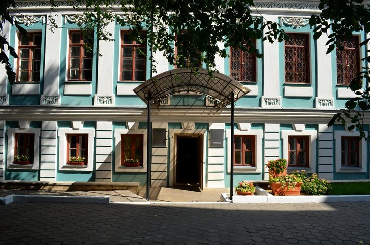

Архитектурный памятник конца XVIII столетия. Сооружение построено в образцово-показательном классическом стиле, что является достаточно редким для провинциального зодчества. Изначально здание создавалось для промышленника С. А. Савостьянова. С 1870 года здесь размещалась Воронежская мещанская управа. Сегодня особняк занимает одно из подразделений литературного музея им. И. С. Никитина.
